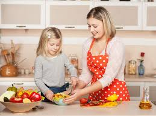
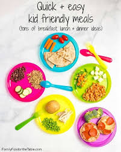

Welcome to kids cooking website
Cooking website for kids recipes is very helpful to new mothers.
It involves food
recipes step by step and benefits of that food , and other the
carbohydrates,protein,vitamins of that food.
As a parent, you want the best for your child, and that includes serving
them healthy, tasty meals that foster a lifelong love for good food.
In this collection of kids' food recipes, we've gathered a treasure trove of
easy-to-make, kid-friendly dishes that are perfect for breakfast, lunch,
dinner, or snack time. From classic favorites to creative twists.

